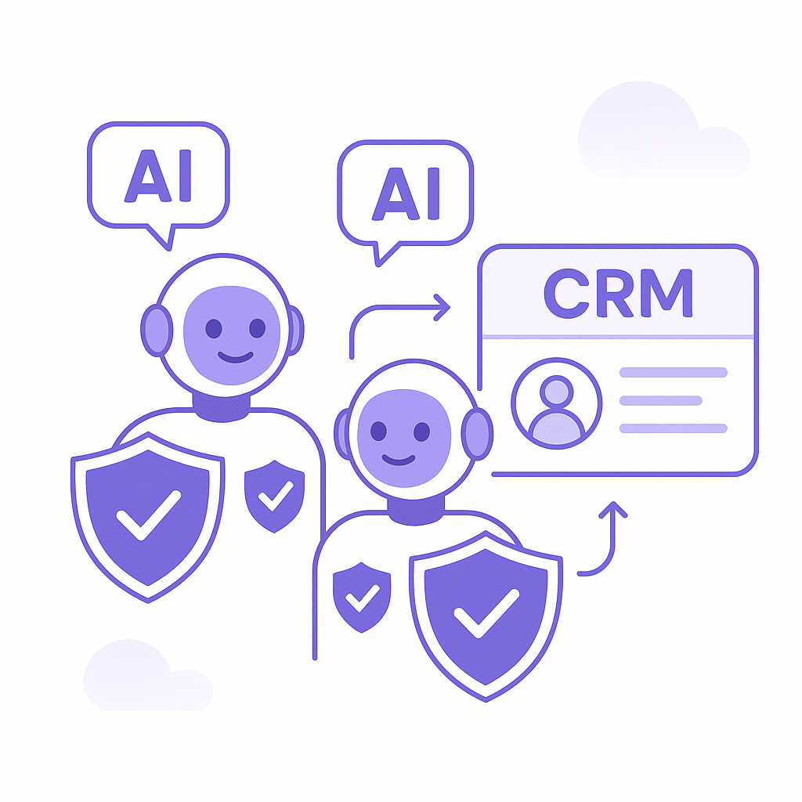
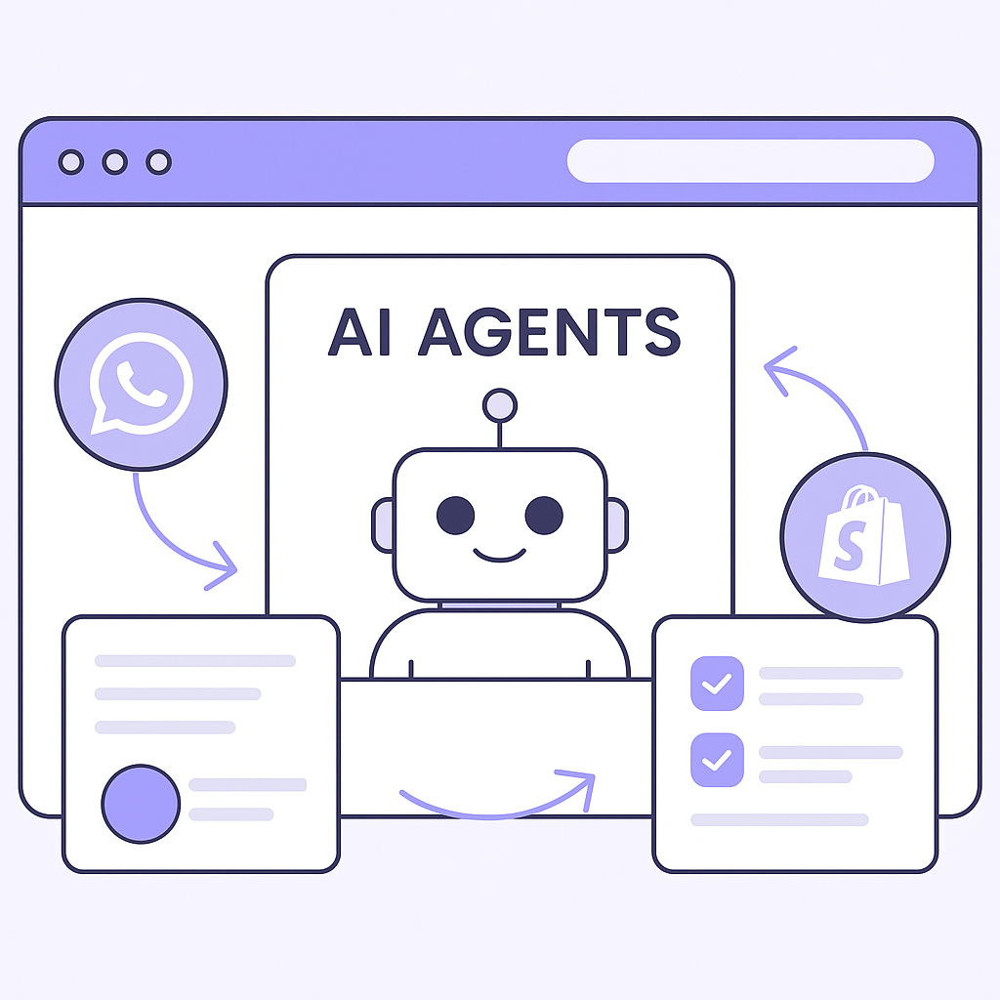
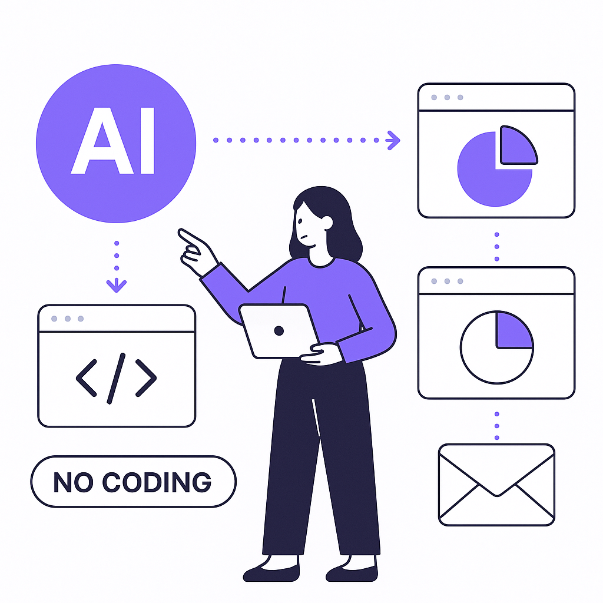

Publishing Recommendation
reviseSeveral posts contain hype or lack specific evidence to support claims. Some drafts need clearer connections to Purands AI's unique value proposition.
Today's drafts touch on significant trends in AI, but they need refining to align with Purands AI's practical and evidence-based voice. The Salesforce Slackbot and AI security posts are particularly relevant but should focus more on specific benefits and unique contributions of Purands AI. Revise to eliminate any exaggerated claims and ensure all points are grounded in verifiable evidence or clear logic.
LinkedIn Posts (10)
1. Salesforce rolls out new Slackbot AI agent as it battles Microsoft and Google in workplace AI ★ Purands solution · high priority
CTA: How do you see AI agents impacting your customer engagement strategy?
Alternative hooks
- Salesforce's new Slackbot AI is changing the game in workplace productivity.
- How Salesforce's AI agent aligns with Purands AI's marketing solutions.
- The rise of AI agents: Salesforce's Slackbot meets Purands' marketing tools.
Research behind this post (sources, summaries & confidence)
Salesforce rolls out new Slackbot AI agent as it battles Microsoft and Google in workplace AI conf 0.80 · AI in business
Salesforce's introduction of a new Slackbot AI agent signifies a major shift in workplace AI, directly impacting how businesses manage customer engagement and lifecycle messaging. This development aligns with Purands AI's focus on practical AI agents for marketing ops, making it highly relevant to the retention marketing audience.
Sources & what I took from each
- Salesforce has introduced a new Slackbot AI agent.: Salesforce recently announced the release of a new AI-powered Slackbot designed to enhance workplace productivity and engagement. ↗ read source
- The AI agent is part of Salesforce's strategy to compete with Microsoft and Google.: Salesforce's new AI initiatives are seen as a direct response to the growing capabilities of Microsoft and Google in the AI space. ↗ read source
Examples
- Salesforce's Slackbot AI improves meeting scheduling and note-taking capabilities.
Original trend links
Risks / caveats
- The effectiveness of the new AI agent may vary greatly across different industries and user needs.
- Competition from established AI solutions by Microsoft and Google could overshadow Salesforce's new offering.
2. AI agents are part of your team now. Here’s how to secure all of them. ★ Purands solution · high priority
CTA: How are you securing your AI agents to maintain customer trust?

⬇ Download image{kind=link}
Image prompt · isometric-flat
Caption: Secure your AI agents for effective retention marketing.
Alternative hooks
- AI agents aren't just futuristic buzz - they're essential team members now.
- Ever considered how secure your AI agents are?
- AI agents are integral to business, but are they secure enough?
Research behind this post (sources, summaries & confidence)
AI agents are part of your team now. Here’s how to secure all of them. conf 0.80 · AI in business
As AI agents become integral to business operations, understanding how to secure them is critical for maintaining customer trust and ensuring data privacy, which are foundational for effective retention marketing strategies.
Sources & what I took from each
- AI agents are increasingly becoming integral parts of business teams.: AI agents are being adopted across industries to automate tasks and enhance productivity. ↗ read source
- Securing AI agents is crucial for data privacy and customer trust.: There is a growing need for robust security measures to protect AI systems from breaches and misuse. ↗ read source
Examples
- Companies implementing strict security protocols for AI agents to prevent data breaches.
Original trend links
- https://venturebeat.com/security/ai-agents-are-part-of-your-team-now-heres-how-to-secure-all-of-them
Risks / caveats
- Failure to secure AI agents could lead to significant data breaches and loss of customer trust.
- The rapid integration of AI without adequate security measures poses risks to businesses.
3. AI in business ★ Purands solution · high priority
CTA: How are you currently measuring the effectiveness of your retention strategies?
Alternative hooks
- Bayesian marketing mix modeling is making waves with Google Meridian's advanced tools.
- Ever wondered if Bayesian models could transform your retention marketing?
- What if your marketing budget could be optimized with precision using Bayesian insights?
Research behind this post (sources, summaries & confidence)
End-to-End Bayesian Marketing Mix Modeling with Google Meridian: Media Measurement, ROI Analysis, and Budget Optimization conf 0.70 · AI in business
Google Meridian's Bayesian marketing mix modeling offers advanced tools for media measurement and ROI analysis, crucial for optimizing retention marketing strategies and improving LTV growth.
Sources & what I took from each
- Google Meridian offers Bayesian marketing mix modeling tools.: These tools are designed to enhance media measurement and optimize marketing budgets effectively. ↗ read source
Examples
- Companies using Bayesian models to improve the accuracy of their marketing ROI assessments.
Original trend links
Risks / caveats
- Complexity of Bayesian models could limit their adoption among businesses without specialized expertise.
- Data privacy concerns in the collection and analysis of marketing data.
4. Cloudflare's Kitesurf and AI-Powered CRM Strategies ★ Purands solution · high priority
CTA: How would you integrate AI agents within your current CRM setup?

⬇ Download image{kind=link}
Image prompt · isometric-flat
Caption: AI agents enhancing CRM strategies with Kitesurf.
Alternative hooks
- Cloudflare's Kitesurf is rewriting the rules for AI agents.
- AI-powered CRM just found its new best friend: Kitesurf.
- Kitesurf is here, and it's changing AI deployment in browsers.
Research behind this post (sources, summaries & confidence)
Cloudflare Introduces Kitesurf: An Agent-First Web Browser That Runs Entirely in V8 Isolates on Cloudflare Workers conf 0.60 · AI in business
Cloudflare's Kitesurf browser, designed for AI agents, could revolutionize how businesses deploy AI solutions for customer interactions, impacting CRM strategies and enhancing customer engagement.
Sources & what I took from each
- Cloudflare has introduced Kitesurf, an agent-first web browser.: The Kitesurf browser is built for running AI agents efficiently, leveraging Cloudflare's infrastructure. ↗ read source
Examples
- Kitesurf enables seamless integration of AI functionalities within web browsers for enhanced business operations.
Original trend links
Risks / caveats
- Adoption may be hindered by compatibility issues with existing systems.
- Security and privacy concerns regarding AI agent operations within browsers.
5. AI in business ★ Purands solution · high priority
CTA: How are you planning to leverage AI chat solutions for better customer retention?
Alternative hooks
- Unlimited text chats are now free for ChatGPT users. What does this mean for business?
- More AI chat solutions are coming to businesses. Here's how Purands can help.
- Free unlimited chats with ChatGPT could change customer engagement. Are you ready?
Research behind this post (sources, summaries & confidence)
OpenAI is giving ChatGPT free users unlimited text chats conf 0.60 · AI in business
OpenAI's decision to offer unlimited text chats to free ChatGPT users may increase the adoption of AI chat solutions in business, impacting customer engagement and retention strategies.
Sources & what I took from each
- OpenAI offers unlimited text chats to free ChatGPT users.: This move is expected to increase the user base and adoption of AI chat solutions in various sectors. ↗ read source
Examples
- Small businesses leveraging ChatGPT for customer support without incurring additional costs.
Original trend links
Risks / caveats
- Increased usage may lead to server load issues or service degradation.
- Potential privacy concerns with the use of free AI chat services.
6. Anthropic launches Cowork, a Claude Desktop agent that works in your files — no coding required
CTA: What are your thoughts on AI tools like Cowork? Would you trust them with your data?

⬇ Download image{kind=link}
Image prompt · isometric-flat
Caption: No-code AI adoption made easy with Cowork.
Alternative hooks
- Imagine streamlining your daily tasks without writing a single line of code.
- The real magic? An AI agent that works in your files, no coding needed.
- What if you could integrate AI into your business tools effortlessly?
Research behind this post (sources, summaries & confidence)
Anthropic launches Cowork, a Claude Desktop agent that works in your files — no coding required conf 0.70 · AI startups
Anthropic's new Cowork agent highlights the trend of AI agents being integrated into everyday business tools without the need for coding. This is significant for retention marketing as it enables more businesses to adopt AI-driven solutions to enhance customer engagement.
Sources & what I took from each
- Anthropic has launched a new AI agent called Cowork.: The Cowork agent by Anthropic allows users to integrate AI into their everyday business tools without needing coding skills. ↗ read source
Examples
- Cowork can streamline document management and collaborative tasks within businesses.
Original trend links
Risks / caveats
- Adoption might be limited by user trust and data security concerns.
- Competition from other no-code AI platforms could limit market penetration.
7. Listen Labs raises $69M after viral billboard hiring stunt to scale AI customer interviews
CTA: How do you see AI reshaping customer feedback in your industry?
Alternative hooks
- Listen Labs just turned a billboard stunt into $69M for AI-driven interviews.
- Have you ever thought AI could handle customer interviews better than humans?
- Scaling customer feedback with AI: Listen Labs raises $69M to make it happen.
Research behind this post (sources, summaries & confidence)
Listen Labs raises $69M after viral billboard hiring stunt to scale AI customer interviews conf 0.70 · AI startups
Listen Labs' focus on scaling AI-driven customer interviews offers insights into innovative ways to gather customer feedback, crucial for refining retention strategies and enhancing customer engagement.
Sources & what I took from each
- Listen Labs has raised $69M for AI-driven customer interviews.: Listen Labs secured $69 million in funding to expand its AI solutions for customer feedback and engagement. ↗ read source
Examples
- Listen Labs using AI to automate and enhance the process of conducting customer interviews.
Original trend links
Risks / caveats
- The effectiveness of AI-driven customer interviews may vary depending on the industry and type of customer base.
- There may be privacy concerns related to the use of AI in customer interviews.
8. Railway secures $100 million to challenge AWS with AI-native cloud infrastructure
CTA: How do you think AI-native infrastructure could change the cloud hosting landscape?
Alternative hooks
- In a world dominated by big players like AWS, Railway's recent $100 million raise is a bold move.
- Can a $100 million investment help Railway compete with AWS in AI infrastructure?
- Railway just secured $100 million to tackle the AI cloud infrastructure challenge. What's next?
Research behind this post (sources, summaries & confidence)
Railway secures $100 million to challenge AWS with AI-native cloud infrastructure conf 0.70 · AI startups
Railway's funding to develop AI-native cloud infrastructure represents a significant shift in how AI solutions are hosted and scaled, potentially impacting how businesses manage customer data and engagement strategies.
Sources & what I took from each
- Railway has raised $100 million to develop AI-native cloud infrastructure.: The funding is aimed at creating infrastructure optimized for AI applications, positioning Railway as a competitor to AWS. ↗ read source
Examples
- Railway's AI-native infrastructure could offer cost-effective solutions for businesses looking to deploy AI at scale.
Original trend links
Risks / caveats
- Competition with established players like AWS could limit Railway's market penetration.
- Technical challenges in scaling AI-native infrastructure to meet diverse business needs.
9. Meta enters the AI coding wars with Muse Spark 1.2 and Muse Code with persistent async background agents
CTA: How do you see persistent async background agents impacting your development workflow?
Alternative hooks
- Meta is shaking up the AI coding scene with Muse Spark 1.2.
- Persistent async background agents - the latest buzzword in AI coding.
- Can Meta's new tools redefine AI development efficiency?
Research behind this post (sources, summaries & confidence)
Meta enters the AI coding wars with Muse Spark 1.2 and Muse Code with persistent async background agents conf 0.70 · AI in business
Meta's entry into the AI coding space with new tools underscores the increasing competition and innovation in AI solutions for business operations, directly impacting customer engagement and retention marketing strategies.
Sources & what I took from each
- Meta has launched Muse Spark 1.2 and Muse Code.: The new tools by Meta are designed to enhance AI coding capabilities with features like persistent async background agents. ↗ read source
Examples
- Businesses using Muse Spark can streamline AI development processes and improve operational efficiency.
Original trend links
Risks / caveats
- Competition from other AI coding tools could limit the adoption of Meta's new products.
- Integration challenges with existing systems may arise.
10. Claude Code costs up to $200 a month. Goose does the same thing for free.
CTA: What would make you choose a free tool over a paid one, or vice versa?
Alternative hooks
- A friend recently shared how they swapped Claude Code for Goose and cut $200 from their monthly expenses.
- Why pay $200 a month for AI coding when you can get similar capabilities for free?
- Businesses are rethinking their AI tool choices when free options offer comparable features.
Research behind this post (sources, summaries & confidence)
Claude Code costs up to $200 a month. Goose does the same thing for free. conf 0.60 · AI in business
The contrast between premium and free AI coding solutions highlights the competitive landscape in AI tools for business operations, impacting how companies might choose tools for customer engagement and retention strategies.
Sources & what I took from each
- Claude Code is a premium AI coding solution costing up to $200 a month.: Reports indicate Claude Code offers advanced AI coding tools with a subscription model costing up to $200 monthly. ↗ read source
- Goose offers similar AI coding capabilities for free.: Goose provides comparable AI coding functionalities without a subscription fee, challenging premium models. ↗ read source
Examples
- Businesses using Goose can potentially save on costs while accessing similar AI coding capabilities.
Original trend links
Risks / caveats
- Free tools like Goose may have limitations in support and features compared to paid alternatives.
- User perception of quality and reliability of free solutions could affect adoption.
Today's Trends
| # | Trend | Category | Why it matters |
|---|---|---|---|
| 1 | Salesforce rolls out new Slackbot AI agent as it battles Microsoft and Google in workplace AI
source |
AI in business | Salesforce's introduction of a new Slackbot AI agent signifies a major shift in workplace AI, directly impacting how businesses manage customer engagement and lifecycle messaging. This development aligns with Purands AI's focus on practical AI agents for marketing ops, making it highly relevant to the retention marketing audience. |
| 2 | WhatsApp commerce: new integrations and best practices for customer interactions
source |
WhatsApp commerce | With WhatsApp being a key channel in APAC commerce, any advancements in its integration or new best practices can significantly affect retention marketing strategies. This is crucial for Purands AI's focus on WhatsApp commerce and lifecycle messaging. |
| 3 | Customer Data Platforms: identity resolution, segmentation, and activation innovations
source |
Customer Data Platforms | Advancements in CDPs, particularly those focusing on identity resolution and segmentation, are vital for enhancing retention marketing strategies. These innovations allow for more precise targeting and personalization, directly supporting Purands AI's mission of improving customer engagement. |
| 4 | Anthropic launches Cowork, a Claude Desktop agent that works in your files — no coding required
source |
AI startups | Anthropic's new Cowork agent highlights the trend of AI agents being integrated into everyday business tools without the need for coding. This is significant for retention marketing as it enables more businesses to adopt AI-driven solutions to enhance customer engagement. |
| 5 | Shopify ecosystem: loyalty apps and customer account innovations
source |
Shopify ecosystem | Innovations in the Shopify ecosystem, particularly around loyalty apps, are crucial for improving customer retention and LTV growth. This aligns with Purands AI's focus on loyalty program design and the Shopify ecosystem. |
| 6 | Claude Code costs up to $200 a month. Goose does the same thing for free.
source |
AI in business | The contrast between premium and free AI coding solutions highlights the competitive landscape in AI tools for business operations, impacting how companies might choose tools for customer engagement and retention strategies. |
| 7 | AI agents are part of your team now. Here’s how to secure all of them.
source |
AI in business | As AI agents become integral to business operations, understanding how to secure them is critical for maintaining customer trust and ensuring data privacy, which are foundational for effective retention marketing strategies. |
| 8 | Listen Labs raises $69M after viral billboard hiring stunt to scale AI customer interviews
source |
AI startups | Listen Labs' focus on scaling AI-driven customer interviews offers insights into innovative ways to gather customer feedback, crucial for refining retention strategies and enhancing customer engagement. |
| 9 | Cloudflare Introduces Kitesurf: An Agent-First Web Browser That Runs Entirely in V8 Isolates on Cloudflare Workers
source |
AI in business | Cloudflare's Kitesurf browser, designed for AI agents, could revolutionize how businesses deploy AI solutions for customer interactions, impacting CRM strategies and enhancing customer engagement. |
| 10 | Railway secures $100 million to challenge AWS with AI-native cloud infrastructure
source |
AI startups | Railway's funding to develop AI-native cloud infrastructure represents a significant shift in how AI solutions are hosted and scaled, potentially impacting how businesses manage customer data and engagement strategies. |
| 11 | Meta enters the AI coding wars with Muse Spark 1.2 and Muse Code with persistent async background agents
source |
AI in business | Meta's entry into the AI coding space with new tools underscores the increasing competition and innovation in AI solutions for business operations, directly impacting customer engagement and retention marketing strategies. |
| 12 | Google just redesigned the search box for the first time in 25 years — here’s why it matters more than you think.
source |
AI in business | Google's redesign of its search box after 25 years could have significant implications for how businesses optimize customer discovery and interaction, impacting search engines' role in retention marketing strategies. |
| 13 | OpenAI is giving ChatGPT free users unlimited text chats
source |
AI in business | OpenAI's decision to offer unlimited text chats to free ChatGPT users may increase the adoption of AI chat solutions in business, impacting customer engagement and retention strategies. |
| 14 | End-to-End Bayesian Marketing Mix Modeling with Google Meridian: Media Measurement, ROI Analysis, and Budget Optimization
source |
AI in business | Google Meridian's Bayesian marketing mix modeling offers advanced tools for media measurement and ROI analysis, crucial for optimizing retention marketing strategies and improving LTV growth. |
Risk Assessment
- Exaggerated claims about AI capabilities in some posts.
- Potentially misleading comparisons to competitors without sufficient evidence.
Suggested LinkedIn Comments (30)
Open each post, then paste the copied comment. Nothing is posted automatically.
1. respectful challenge · Graham Berrisford — CAN A LARGE LANGUAGE MODEL THINK? Thinking in animals emerged through biological
Post by: Graham Berrisford
Why it works: It acknowledges the post's angle while clarifying the limitations of LLMs in terms of true cognitive attributes.
↗ Open LinkedIn post to paste comment2. insight · Right Rudder Marketing — What a Large Language Model Actually Does AI Isn't Thinking. It's Predicting.
Post by: Right Rudder Marketing
Why it works: It builds on the post's explanation, reinforcing the distinction between prediction and understanding.
↗ Open LinkedIn post to paste comment3. expansion · Vstorm — Is it time to consider Small Language Models instead of LLMs? While Large Langu
Post by: Vstorm
Why it works: It supports the post's argument and highlights additional benefits of SLMs in specific contexts.
↗ Open LinkedIn post to paste comment4. insight · Robert Ambrogi — Thomson Reuters says the large language model it has been quietly building in-ho
Post by: Robert Ambrogi
Why it works: It adds value by identifying the potential for industry-specific optimizations, aligning with the post's focus on benchmarking results.
↗ Open LinkedIn post to paste comment5. insight · Craig Hall — Machine Learning and Building Large Language Models (LLMs) -- A clear explanatio
Post by: Craig Hall
Why it works: It stresses the importance of understanding AI mechanics to improve application and ethics, complementing the educational intent of the post.
↗ Open LinkedIn post to paste comment6. respectful challenge · Krishna Harsha Tangirala — How Large Language Models (LLMs) Actually Work Every conversation with ChatGPT,
Post by: Krishna Harsha Tangirala
Why it works: It acknowledges the post's breakdown while reminding readers of the limitations in AI's understanding.
↗ Open LinkedIn post to paste comment7. opinion · Don Woodlock — Large language models have come a long way in a short time, as have our approach
Post by: Don Woodlock
Why it works: It aligns with the post's discussion of new methodologies, emphasizing the importance of approach over raw capability.
↗ Open LinkedIn post to paste comment8. expansion · John Marvel — Sheeling Neo (梁诗琳) Sangwon Ju Rachel (Soyeon) Cho 📢 If you are interested in l
Post by: John Marvel
Why it works: It expands on the post by suggesting practical applications of varied conversational styles in public administration.
↗ Open LinkedIn post to paste comment9. respectful challenge · Graham Brooks, CISSP — Here's a partially informed shower thought: I remain unconvinced that language m
Post by: Graham Brooks, CISSP
Why it works: It challenges the post's speculative angle with a grounded perspective on AI's lack of awareness.
↗ Open LinkedIn post to paste comment10. insight · James J Sexton — I’ve already seen this happen in my own office. A good large language model can
Post by: James J Sexton
Why it works: It highlights the strategic reallocation of human resources enabled by AI, aligning with the post's focus on efficiency.
↗ Open LinkedIn post to paste comment11. insight · Matt Williams — Large language models have developed personalities. Not personalities in the hu
Post by: Matt Williams
Why it works: Adds depth to the discussion by connecting AI 'personalities' to real-world application and user experience.
↗ Open LinkedIn post to paste comment12. insight · Mike Carter, CPA — You may not know LLMs are not actually Artificial Intelligence...... Large Lang
Post by: Mike Carter, CPA
Why it works: Clarifies the role of LLMs and reinforces the practical advice from the post, adding value for those using AI in practice.
↗ Open LinkedIn post to paste comment13. opinion · Tillapu B. — Artificial Intelligence (AI) is transforming the modern world. It powers applica
Post by: Tillapu B.
Why it works: Acknowledges the post's points while emphasizing the need for ethical considerations, offering a balanced view on AI's impact.
↗ Open LinkedIn post to paste comment14. respectful challenge · Venkata Suresh — Can working professionals successfully complete a university-level course while
Post by: Venkata Suresh
Why it works: Adds a cautionary perspective, ensuring the use of AI in education is balanced with traditional learning methods.
↗ Open LinkedIn post to paste comment15. expansion · Hiren Modh — 🧠 AI Quiz Challenge #1 | Test Your Knowledge Artificial Intelligence is trans
Post by: Hiren Modh
Why it works: Appreciates the approach while expanding on its benefits for education and engagement with AI.
↗ Open LinkedIn post to paste comment16. insight · Jamie Garner — Utah Tech University has a few seats left for the Post-Baccalaureate Certificate
Post by: Jamie Garner
Why it works: Recognizes the program's value in the professional development landscape, aligning with the post's intent.
↗ Open LinkedIn post to paste comment17. opinion · Juraci Colombo — Artificial Intelligence (AI) is more than just a technology trend — it represent
Post by: Juraci Colombo
Why it works: Balances the post's enthusiasm with a reminder of the importance of data quality and ethical standards in AI deployment.
↗ Open LinkedIn post to paste comment18. insight · Elvis Veliz — We've opened an exciting new role: Artificial Intelligence (AI) Offensive Securi
Post by: Elvis Veliz
Why it works: Emphasizes the innovative aspect of the role while acknowledging the challenges in AI-driven security.
↗ Open LinkedIn post to paste comment19. opinion · Carol Johnson — Artificial intelligence is reshaping more than technology—it is reshaping the go
Post by: Carol Johnson
Why it works: Adds a leadership perspective to the governance discussion, reinforcing the multi-dimensional nature of AI integration.
↗ Open LinkedIn post to paste comment20. insight · Terry Williams — AI MODEL COMPARISON: USE MULTIPLE LEADERBOARDS: No single benchmark identifies
Post by: Terry Williams
Why it works: Supports the post's strategy by emphasizing the practical benefits of diverse evaluation metrics for AI models.
↗ Open LinkedIn post to paste comment21. insight · Michael Haynes — Artificial Intelligence is changing the audiovisual industry—but the biggest shi
Post by: Michael Haynes
Why it works: The comment underscores the importance of strong engineering, aligning with the post's message and adding practical context.
↗ Open LinkedIn post to paste comment22. respectful challenge · Bill SerGio — Real Artificial Intelligence Doesn't Need Training Data... It Needs the Principl
Post by: Bill SerGio
Why it works: It respectfully challenges the notion by emphasizing the continued importance of training data, adding depth to the discussion.
↗ Open LinkedIn post to paste comment23. opinion · AI in Biotech — Artificial intelligence deciphers the subtle syntax of nature; biotechnology pro
Post by: AI in Biotech
Why it works: By focusing on practical application, it complements the original metaphor with a grounded perspective on outcomes.
↗ Open LinkedIn post to paste comment24. expansion · Jon Halstead — Because I want you to know How I feel, about Ai and governance. I'm being the ch
Post by: Jon Halstead
Why it works: The comment expands on the post by highlighting the need for systemic change, adding a layer of practicality.
↗ Open LinkedIn post to paste comment25. insight · Sagi Tal — I've been running multiple specialized agents instead of one assistant for month
Post by: Sagi Tal
Why it works: It provides insight into the potential challenges of Sagi's approach, offering a balanced view on its implementation.
↗ Open LinkedIn post to paste comment26. insight · Charlotte Wylie — I just published my first article sharing my perspective on Okta’s new Global CI
Post by: Charlotte Wylie
Why it works: The comment reinforces and deepens the discussion by emphasizing the security implications of AI governance.
↗ Open LinkedIn post to paste comment27. opinion · N-iX — AI is reshaping enterprise automation through multi-agent systems, specialized m
Post by: N-iX
Why it works: This comment adds a critical lens on implementation challenges, offering a pragmatic view on the integration process.
↗ Open LinkedIn post to paste comment28. opinion · Ricardo Amper — Seven days after 1,290 of the people who build frontier AI asked governments for
Post by: Ricardo Amper
Why it works: It highlights the need for ethical standards, aligning with the post's concerns about AI's potential misuse.
↗ Open LinkedIn post to paste comment29. insight · Michael Haynes — Artificial Intelligence is changing the audiovisual industry—but the biggest shi
Post by: Michael Haynes
Why it works: The comment offers insight into the complementary nature of AI and engineering, reinforcing the post's key point.
↗ Open LinkedIn post to paste comment30. opinion · AITech365 — Agents for Good Need a Better Test AI agents are no longer just a tech experim
Post by: AITech365
Why it works: It aligns with and expands upon the post's focus on evaluating AI's real-world impact in the nonprofit sector.
↗ Open LinkedIn post to paste comment